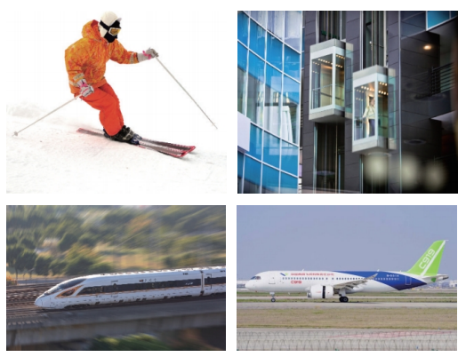
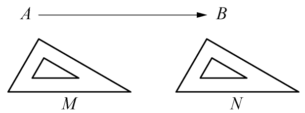
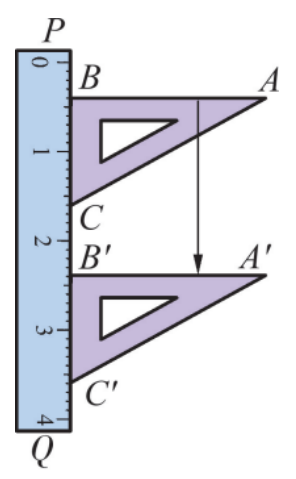
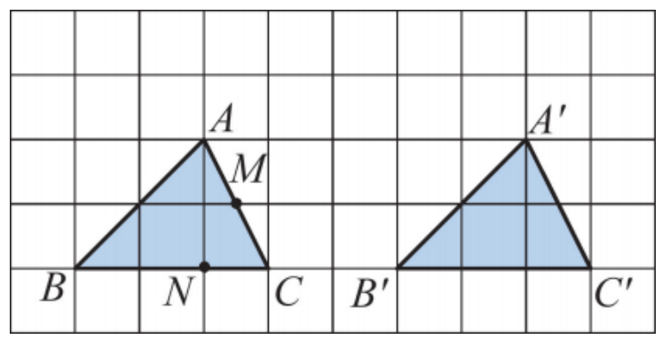
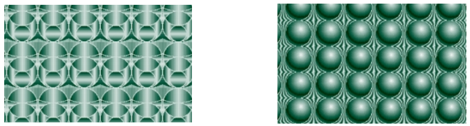
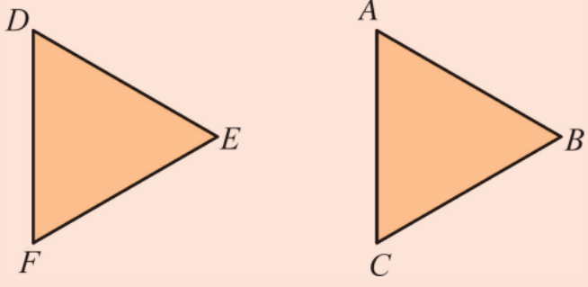
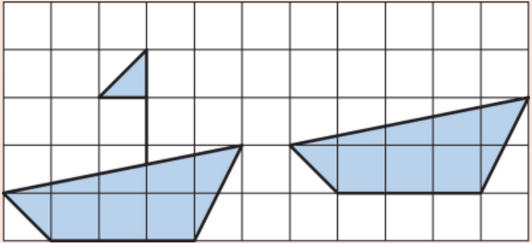

在日常生活中，我们经常可以看到如图9.2.1所示的一些现象：滑雪运动员在白茫茫的平坦雪地上滑行，大楼电梯上上下下地迎送来客，火车在笔直的铁轨上飞驰而过，飞机起飞前在跑道上加速滑行，这些都给我们以物体平行移动的感觉。


如图9.2.3，当我们使用直尺和三角板画平行线时，将 \(\triangle ABC\) 沿着直尺 \(PQ\) 平移到 \(\triangle A'B'C'\) ，就可以画出 \(AB\) 的平行线 \(A'B'\) 了。

我们把点 \(A\) 与点 \(A'\) 叫做对应点，把线段 \(AB\) 与线段 \(A'B'\) 叫做对应线段，把 \(\angle A\) 与 \(\angle A'\) 叫做对应角。
点 \(B\) 的对应点是点 \(B'\)；点 \(C\) 的对应点是点 \(C'\)；线段 \(AC\) 的对应线段是线段 \(A'C'\)；线段 \(BC\) 的对应线段是线段 \(B'C'\)；\(\angle B\) 的对应角是 \(\angle B'\)；\(\angle C\) 的对应角是 \(\angle C'\)。
在图9.2.4中， \(\triangle ABC\) 沿着由点 \(A\) 到点 \(A'\) 的方向，平移到 \(\triangle A'B'C'\) 的位置。你知道线段 \(AC\) 的中点 \(M\) 以及线段 \(BC\) 上的点 \(N\) 平移到哪个位置了吗？请在图中标出它们的对应点 \(M'\) 和 \(N'\) 的位置。

\(M'\) 是 \(A'C'\) 的中点，\(N'\) 在 \(B'C'\) 上且 \(B'N' = BN\)。
图形的平移在图案设计中具有很大作用。如图9.2.5所示的两幅美丽的图案都可以看成是由某一基本的图案，在同一平面内沿着一定的方向平移若干次而产生的结果。

1. 举出现实生活中平移的一些实例。
例如：推拉窗的滑动、传送带上的物品、升降电梯、滑雪等。
2. 如图所示的 \(\triangle ABC\) 和 \(\triangle DEF\) 都是等边三角形, 其中一个等边三角形经过平移后成为另一个等边三角形。指出点 \(A, B, C\) 的对应点, 线段 \(AB, BC, CA\) 的对应线段, 以及 \(\angle A, \angle B, \angle C\) 的对应角。

点A对应点D，点B对应点E，点C对应点F；AB对应DE，BC对应EF，CA对应FD；∠A对应∠D，∠B对应∠E，∠C对应∠F。
3. 如图, 小船经过平移到了新的位置, 你发现缺少什么了吗? 请补上。

根据平移的方向和距离，将原图形的每个顶点都平移相同的距离，连接即可。
抽象能力： 从生活实例中抽象出平移的概念。
模型观念： 平移是一种基本的图形变换模型。
应用意识： 利用平移设计图案。